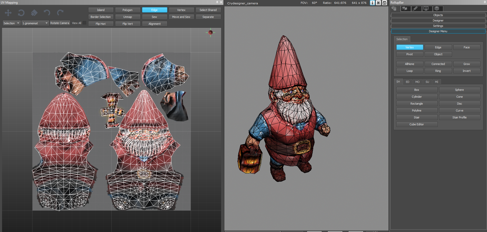

Shaders
Are we recording?

Review
What is the main difference between raster and vector fonts?
- Raster fonts blur when zoomed in
- Vector fonts don't
Review
What is a Canvas and what can it do?
- Parent object for all UI elements
- Can be rendered as a screen overlay or in world space
- Can have constant pixels size or scale with screen size
Review
Name any 3 UI Elements
- Text
- Button
- Image
Rendering
- The process of creating an image from the contents of a scene
- Belongs to the class of embarrasingly parallel problems
- As such it is mainly done on the GPU
CPU vs GPU
- The CPU has few cores with high clocks speeds
- High Frequency
- The GPU has many cores with low clocks speeds
- High Throughput
Rendering Pipeline
Source: CG Science for Artists
Shader Definition
A shader is a program that runs in the rendering pipeline and tells the GPU how to render each pixel
Shading Languages
- The most popular ones are:
- Cg (C for Graphics)
- HLSL (High-Level Shading Language)
- GLSL (OpenGL Shading Language)
- All have a C-like syntax
- Cg and HLSL have the same syntax
- Shaders in Unity are in a HLSL variant (ShaderLab) and uses different compilers for different platforms
Shaders in Unity
- Shader code is written in HLSL
- ShaderLab uses that and adds properties like textures and colors
- The Material sets those parameters
- The Renderer Component provides mesh data
Shader Properties
A list of properties that can be set in a material's inspector
Properties
{
_MainTex("Texture", 2D) = "white" {}
_Intensity("Tint Intensity", Range(0, 1)) = 0.1
_Color("Tint", Color) = (1.0, 0.1, 1.0, 1)
}Providing Vertex Data
- In HLSL a struct is defined with vertex data from the mesh to be passed as input to the vertex shader
- That data can be:
- Vertex Position
- Vertex Normal
- UV (Texture Coordinates)
- Vertex Tangent
- Vertex Color
Normals
Used for calculating how light reflects off of objects. Is per vertex - NOT per face!

Source: Introduction to Shading - Normals
UV Mapping
The process of projecting a 2D image to a 3D surface
Source: UV Mapping Editor in CryEngine
Vertex Shader
Works on vertex data from the mesh. Called once for each vertex. The most basic use is mapping vertex positions from object space to clip space.
// The data that will be read from the mesh
struct appdata
{
// The position of the vertex in object space
float4 vertex : POSITION;
};
// The data that will be passed to the fragment shader
struct v2f
{
float4 vertex : SV_POSITION;
};
// The vertex shader function
// It takes data from the mesh
v2f vert(appdata v)
{
v2f o;
// And converts the position from object to clip space
o.vertex = UnityObjectToClipPos(v.vertex);
return o;
}Rasterization
The process by which a primitive
(most often a triangle) is converted to a 2D image
Source: Rasterization - a Practical Implementation
Fragment (Pixel) Shader
- The fragment shader is called once for each fragment generated by rasterization
- Gets Interpolated values from the vertex shader
- It determines the final color of the fragment
// The fragment shader function
// Gets interpolated data from the vertex shader in a v2f
float4 frag(v2f i) : SV_Target
{
// And uses it to produce some color
float4 color = float4(i.uv, 0, 1);
return color;
}Shader Semantics
Vertex Data DocumentationTODO
Blending
Blending DocumentaitonTODO
Handling Transparency
Additive
Multiplicative
Post-Processing Shaders
TODO
OnRenderImage
Graphics.Blit
Extra Resources
Questions?